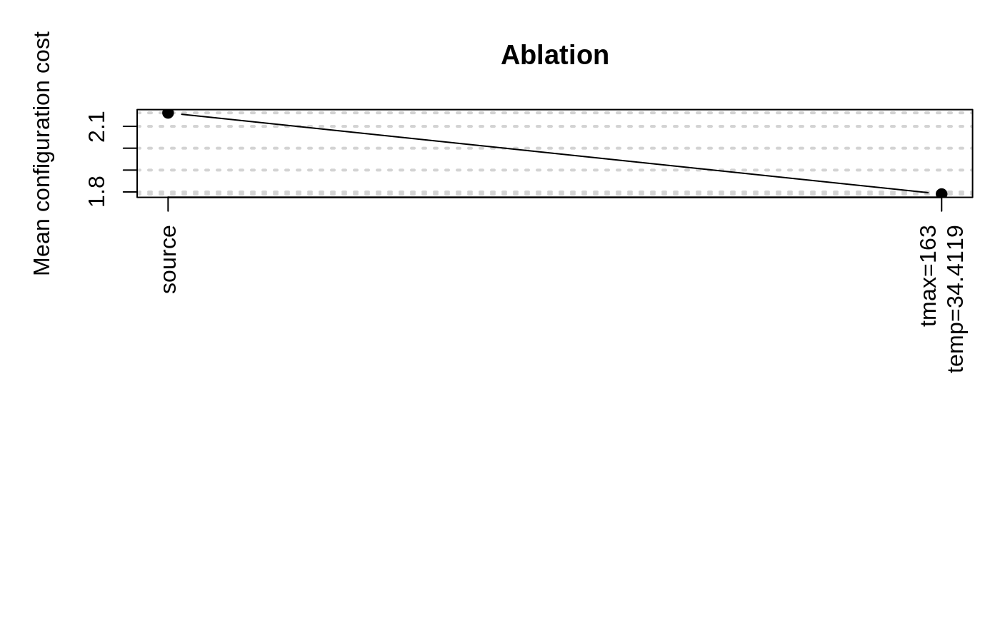

Ablation is a method for analyzing the differences between two configurations.
ablation(iraceLogFile = NULL, iraceResults = NULL, src = NULL, target = NULL, ab.params = NULL, n.instances = NULL, type = "full", seed = 1234567, ablationLogFile = "log-ablation.Rdata", pdf.file = NULL, pdf.width = 20, mar = c(12, 5, 4, 1), debugLevel = NULL)
| iraceLogFile | Log file created by irace, this file must contain
the |
|---|---|
| iraceResults | Object created by irace and saved in
|
| src, target | Source and target configuration IDs. If |
| ab.params | Parameter names to be used for the ablation. They must be in parameters$names. |
| n.instances | Number of instances to be used for the "full" ablation, if not provided firstTest instances are used. |
| type | Type of ablation to perform, "full" will execute all instances in the configurations to determine the best performing, "racing" will apply racing to find the best configurations. |
| seed | Numerical value to use as seed for the random number generation. |
| ablationLogFile | Log file to save the ablation log. |
| pdf.file | Prefix that will be used to save the plot file of the ablation results. |
| pdf.width | Width provided to create the pdf file. |
| mar | Vector with the margins for the ablation plot. |
| debugLevel | ( |
A list containing the following elements:
Configurations tested in the ablation.
A matrix with the instances used in the experiments. First column has the
instances IDs from iraceResults$scenario$instances, second column the seed assigned to the instance.
A matrix with the results of the experiments (columns are configurations, rows are instances).
Scenario object with the settings used for the experiments.
IDs of the best configurations at each step of the ablation.
Best configuration found in the experiments.
C. Fawcett and H. H. Hoos. Analysing differences between algorithm configurations through ablation. Journal of Heuristics, 22(4):431–458, 2016.
# \donttest{ irace.logfile <- file.path(system.file(package="irace"), "exdata", "sann.rda") load(irace.logfile) # Execute ablation between the first and the best configuration found by irace. ablation(iraceResults = iraceResults, ablationLogFile = NULL)#> # 2020-04-16 10:29:34 UTC: Starting ablation from 1 to 86 : #> # Seed:1234567 #> # Configurations (row number is ID): #> tmax temp #> 1 1944 33.1067 #> 86 174 57.7336 #> # 2020-04-16 10:29:34 UTC: Executing source and target configurations on the given instances... #> # Generating configurations (row number is ID): tmax temp #> tmax temp #> 2 174 33.1067 #> 3 1944 57.7336 #> # 2020-04-16 10:29:38 UTC: Ablation (full) of 2 configurations on 100 instances. #> # Markers: #> x No test is performed. #> c Configurations are discarded only due to capping. #> - The test is performed and some configurations are discarded. #> = The test is performed but no configuration is discarded. #> ! The test is performed and configurations could be discarded but elite configurations are preserved. #> . All alive configurations are elite and nothing is discarded #> #> +-+-----------+-----------+-----------+---------------+-----------+--------+-----+----+------+ #> | | Instance| Alive| Best| Mean best| Exp so far| W time| rho|KenW| Qvar| #> +-+-----------+-----------+-----------+---------------+-----------+--------+-----+----+------+ #> |x| 1| 2| 2| 0.08079872425| 2|00:00:00| NA| NA| NA| #> |x| 2| 2| 2| 0.08608749581| 4|00:00:00|+1.00|1.00|0.0000| #> |x| 3| 2| 2| 1.041171759| 6|00:00:00|-0.33|0.11|0.6667| #> |x| 4| 2| 2| 1.005019973| 8|00:00:00|-0.33|0.00|0.6667| #> |x| 5| 2| 2| 0.8498017483| 10|00:00:00|-0.20|0.04|0.6000| #> |x| 6| 2| 2| 0.7145811957| 12|00:00:00|-0.07|0.11|0.5333| #> |x| 7| 2| 2| 0.6256842752| 14|00:00:00|+0.05|0.18|0.4762| #> |x| 8| 2| 2| 0.9028896898| 16|00:00:00|-0.07|0.06|0.5357| #> |x| 9| 2| 2| 0.8382942218| 18|00:00:00|+0.00|0.11|0.5000| #> |x| 10| 2| 2| 0.7637298376| 20|00:00:00|+0.07|0.16|0.4667| #> |x| 11| 2| 2| 0.9911093422| 22|00:00:00|-0.02|0.07|0.5091| #> |x| 12| 2| 2| 1.252757784| 24|00:00:00|-0.06|0.03|0.5303| #> |x| 13| 2| 2| 1.389831739| 26|00:00:00|-0.08|0.01|0.5385| #> |x| 14| 2| 2| 1.305755373| 28|00:00:00|-0.05|0.02|0.5275| #> |x| 15| 2| 2| 1.248387313| 30|00:00:00|-0.07|0.00|0.5333| #> |x| 16| 2| 2| 1.353126050| 32|00:00:00|-0.05|0.02|0.5250| #> |x| 17| 2| 2| 1.444640144| 34|00:00:00|-0.06|0.00|0.5294| #> |x| 18| 2| 2| 1.372756170| 36|00:00:00|-0.05|0.01|0.5229| #> |x| 19| 2| 2| 1.310252054| 38|00:00:00|-0.03|0.02|0.5146| #> |x| 20| 2| 2| 1.655068003| 40|00:00:00|-0.04|0.01|0.5211| #> |x| 21| 2| 2| 1.578122514| 42|00:00:00|-0.03|0.02|0.5143| #> |x| 22| 2| 2| 1.507576406| 44|00:00:00|-0.01|0.03|0.5065| #> |x| 23| 2| 2| 1.443138571| 46|00:00:00|+0.00|0.05|0.4980| #> |x| 24| 2| 2| 1.390706325| 48|00:00:00|+0.02|0.06|0.4891| #> |x| 25| 2| 2| 1.342836240| 50|00:00:00|+0.00|0.04|0.5000| #> |x| 26| 2| 2| 1.407431330| 52|00:00:00|-0.02|0.02|0.5077| #> |x| 27| 2| 2| 1.480378692| 54|00:00:00|-0.03|0.01|0.5128| #> |x| 28| 2| 2| 1.434994300| 56|00:00:00|-0.02|0.02|0.5079| #> |x| 29| 2| 2| 1.387523166| 58|00:00:00|-0.00|0.03|0.5025| #> |x| 30| 2| 2| 1.884467613| 60|00:00:00|-0.02|0.02|0.5080| #> |x| 31| 2| 2| 1.837945163| 62|00:00:00|-0.01|0.03|0.5032| #> |x| 32| 2| 2| 1.790980208| 64|00:00:00|+0.00|0.04|0.4980| #> |x| 33| 2| 2| 1.740075320| 66|00:00:00|+0.02|0.04|0.4924| #> |x| 34| 2| 2| 1.813322504| 68|00:00:00|+0.00|0.03|0.4991| #> |x| 35| 2| 2| 1.911088999| 70|00:00:00|-0.01|0.02|0.5042| #> |x| 36| 2| 2| 1.860783306| 72|00:00:00|-0.02|0.01|0.5079| #> |x| 37| 2| 2| 1.895186624| 74|00:00:00|-0.02|0.01|0.5105| #> |x| 38| 2| 2| 1.847130615| 76|00:00:00|-0.02|0.01|0.5078| #> |x| 39| 2| 2| 1.800452111| 78|00:00:00|-0.01|0.02|0.5047| #> |x| 40| 2| 2| 1.759052626| 80|00:00:00|-0.00|0.02|0.5013| #> |x| 41| 2| 2| 1.719692632| 82|00:00:00|+0.00|0.03|0.4976| #> |x| 42| 2| 2| 1.700817035| 84|00:00:00|-0.00|0.02|0.5017| #> |x| 43| 2| 2| 1.661531390| 86|00:00:00|+0.00|0.03|0.4983| #> |x| 44| 2| 2| 1.626183891| 88|00:00:00|+0.01|0.03|0.4947| #> |x| 45| 2| 2| 1.592098620| 90|00:00:00|+0.00|0.02|0.4990| #> |x| 46| 2| 2| 1.559782899| 92|00:00:00|+0.01|0.03|0.4957| #> |x| 47| 2| 2| 1.530342977| 94|00:00:00|+0.02|0.04|0.4921| #> |x| 48| 2| 2| 1.498599733| 96|00:00:00|+0.02|0.04|0.4885| #> |x| 49| 2| 2| 1.549500567| 98|00:00:00|+0.01|0.03|0.4932| #> |x| 50| 2| 2| 1.671520385| 100|00:00:00|+0.01|0.03|0.4971| #> |x| 51| 2| 2| 1.695159070| 102|00:00:00|-0.00|0.02|0.5004| #> |x| 52| 2| 2| 1.740391853| 104|00:00:00|-0.01|0.01|0.5030| #> |x| 53| 2| 2| 1.762034804| 106|00:00:00|-0.00|0.02|0.5007| #> |x| 54| 2| 2| 1.730930315| 108|00:00:00|+0.00|0.02|0.4983| #> |x| 55| 2| 2| 1.700061069| 110|00:00:00|+0.01|0.03|0.4956| #> |x| 56| 2| 2| 1.672487920| 112|00:00:00|+0.01|0.03|0.4929| #> |x| 57| 2| 2| 1.645104807| 114|00:00:00|+0.02|0.04|0.4900| #> |x| 58| 2| 2| 1.622431318| 116|00:00:00|+0.03|0.04|0.4870| #> |x| 59| 2| 2| 1.595396418| 118|00:00:00|+0.03|0.05|0.4839| #> |x| 60| 2| 2| 1.595794014| 120|00:00:00|+0.04|0.05|0.4808| #> |x| 61| 2| 2| 1.570757838| 122|00:00:00|+0.04|0.06|0.4776| #> |x| 62| 2| 2| 1.593006737| 124|00:00:00|+0.04|0.05|0.4823| #> |x| 63| 2| 2| 1.569115377| 126|00:00:00|+0.04|0.06|0.4793| #> |x| 64| 2| 2| 1.544861601| 128|00:00:00|+0.05|0.06|0.4762| #> |x| 65| 2| 2| 1.565917830| 130|00:00:00|+0.04|0.05|0.4808| #> |x| 66| 2| 2| 1.604684111| 132|00:00:00|+0.03|0.04|0.4848| #> |x| 67| 2| 2| 1.586124029| 134|00:00:00|+0.04|0.05|0.4821| #> |x| 68| 2| 2| 1.563425191| 136|00:00:00|+0.03|0.04|0.4860| #> |x| 69| 2| 2| 1.542015196| 138|00:00:00|+0.03|0.05|0.4834| #> |x| 70| 2| 2| 1.521678359| 140|00:00:00|+0.04|0.05|0.4807| #> |x| 71| 2| 2| 1.541536845| 142|00:00:00|+0.03|0.04|0.4845| #> |x| 72| 2| 2| 1.522071916| 144|00:00:00|+0.04|0.05|0.4820| #> |x| 73| 2| 2| 1.540492165| 146|00:00:00|+0.03|0.04|0.4855| #> |x| 74| 2| 2| 1.524233054| 148|00:00:00|+0.02|0.04|0.4887| #> |x| 75| 2| 2| 1.503990213| 150|00:00:00|+0.03|0.04|0.4865| #> |x| 76| 2| 2| 1.485248037| 152|00:00:00|+0.03|0.04|0.4842| #> |x| 77| 2| 2| 1.483110435| 154|00:00:00|+0.03|0.04|0.4874| #> |x| 78| 2| 2| 1.464505553| 156|00:00:00|+0.03|0.04|0.4852| #> |x| 79| 2| 2| 1.496918262| 158|00:00:00|+0.02|0.04|0.4882| #> |x| 80| 2| 2| 1.479774157| 160|00:00:00|+0.02|0.03|0.4908| #> |x| 81| 2| 2| 1.461633267| 162|00:00:00|+0.02|0.03|0.4889| #> |x| 82| 2| 2| 1.444110241| 164|00:00:00|+0.03|0.04|0.4869| #> |x| 83| 2| 2| 1.475753332| 166|00:00:00|+0.02|0.03|0.4896| #> |x| 84| 2| 2| 1.458394954| 168|00:00:00|+0.02|0.04|0.4877| #> |x| 85| 2| 2| 1.441349091| 170|00:00:00|+0.03|0.04|0.4857| #> |x| 86| 2| 2| 1.426076685| 172|00:00:00|+0.02|0.03|0.4884| #> |x| 87| 2| 2| 1.443017916| 174|00:00:00|+0.03|0.04|0.4865| #> |x| 88| 2| 2| 1.427585243| 176|00:00:00|+0.03|0.04|0.4846| #> |x| 89| 2| 2| 1.411921834| 178|00:00:00|+0.03|0.05|0.4826| #> |x| 90| 2| 2| 1.397480967| 180|00:00:00|+0.04|0.05|0.4806| #> |x| 91| 2| 2| 1.382376568| 182|00:00:00|+0.04|0.05|0.4786| #> |x| 92| 2| 2| 1.367592028| 184|00:00:00|+0.04|0.05|0.4816| #> |x| 93| 2| 2| 1.354099783| 186|00:00:00|+0.04|0.05|0.4797| #> |x| 94| 2| 2| 1.343346881| 188|00:00:00|+0.04|0.05|0.4777| #> |x| 95| 2| 2| 1.329366788| 190|00:00:00|+0.05|0.06|0.4757| #> |x| 96| 2| 2| 1.316326571| 192|00:00:00|+0.05|0.06|0.4737| #> |x| 97| 2| 2| 1.303197420| 194|00:00:00|+0.06|0.07|0.4716| #> |x| 98| 2| 2| 1.303141742| 196|00:00:00|+0.06|0.07|0.4696| #> |x| 99| 2| 2| 1.291566476| 198|00:00:00|+0.06|0.07|0.4675| #> |=| 100| 2| 2| 1.406962672| 200|00:00:00|+0.06|0.07|0.4709| #> +-+-----------+-----------+-----------+---------------+-----------+--------+-----+----+------+ #> Best-so-far configuration: 2 mean value: 1.406962672 #> Description of the best-so-far configuration: #> .ID. tmax temp .PARENT. #> 2 2 174 33.1067 1 #> #> # tmax 1944 -> 174 #> # 2020-04-16 10:29:43 UTC: Final best configuration: #> tmax temp #> 2 174 33.1067#> $configurations #> .ID. tmax temp .PARENT. #> 1 1 1944 33.1067 NA #> 11 2 174 33.1067 1 #> 2 3 1944 57.7336 1 #> 86 4 174 57.7336 28 #> #> $instances #> instance seed #> 1 78 747607747 #> 2 27 1978865385 #> 3 33 2013052311 #> 4 34 122554189 #> 5 59 2051723367 #> 6 80 2081997514 #> 7 39 2119004196 #> 8 64 306445407 #> 9 7 1215524956 #> 10 65 1293795474 #> 11 95 1229497975 #> 12 16 1237091561 #> 13 19 1742052408 #> 14 60 805298965 #> 15 32 130864637 #> 16 71 997403804 #> 17 28 658265029 #> 18 30 462489390 #> 19 44 1635842656 #> 20 100 507923323 #> 21 6 1429454553 #> 22 91 1682788467 #> 23 15 276731620 #> 24 37 232803185 #> 25 45 168887701 #> 26 81 959096685 #> 27 8 563162715 #> 28 49 1489756895 #> 29 23 586306072 #> 30 22 1009085729 #> 31 54 863747016 #> 32 29 1489319069 #> 33 10 1421275773 #> 34 3 1075210737 #> 35 92 349271487 #> 36 47 16653 #> 37 89 1101574190 #> 38 93 685323018 #> 39 83 609326369 #> 40 79 1354338785 #> 41 98 852565085 #> 42 82 9910237 #> 43 11 1473967750 #> 44 50 177626078 #> 45 76 503778502 #> 46 42 1967478576 #> 47 97 361300915 #> 48 77 1856657739 #> 49 75 2007051392 #> 50 48 212494403 #> 51 94 524841098 #> 52 66 981953086 #> 53 35 607981684 #> 54 61 1252050366 #> 55 56 481491575 #> 56 20 1199607169 #> 57 70 1358355016 #> 58 5 1979152749 #> 59 26 216580027 #> 60 18 715951662 #> 61 14 1708221026 #> 62 74 432164418 #> 63 24 2092963608 #> 64 62 482726585 #> 65 90 1701503218 #> 66 13 519402474 #> 67 99 1507613314 #> 68 4 2022165263 #> 69 69 1523763160 #> 70 67 1884913671 #> 71 84 815860486 #> 72 58 725855647 #> 73 63 127383344 #> 74 72 1939749955 #> 75 1 219760076 #> 76 53 591457714 #> 77 96 1180014739 #> 78 88 203535618 #> 79 86 2009831245 #> 80 87 2032123553 #> 81 41 1190857902 #> 82 57 2040989455 #> 83 21 817989086 #> 84 52 1696886239 #> 85 43 1991279359 #> 86 73 765262857 #> 87 40 1125268814 #> 88 38 167456315 #> 89 9 1949981146 #> 90 85 734252116 #> 91 46 1849415409 #> 92 2 572975735 #> 93 25 2025983636 #> 94 17 34241383 #> 95 55 1971491956 #> 96 36 1333688172 #> 97 12 294533717 #> 98 31 1169258093 #> 99 68 1081767331 #> 100 51 1726719293 #> #> $experiments #> 1 2 3 4 #> 1 3.073032068 0.080798724 2.97223167 0.02539596 #> 2 0.012394718 0.091376267 0.64313533 3.24644742 #> 3 1.747367078 2.951340286 0.34882634 0.06428807 #> 4 5.795936992 0.896564613 0.12434935 0.47124902 #> 5 0.013133157 0.228928850 0.66029329 0.23411813 #> 6 3.040500046 0.038478433 1.56257835 0.56595505 #> 7 2.908643433 0.092302752 0.44104789 0.12205327 #> 8 4.563678723 2.843327591 2.16513856 0.23141583 #> 9 0.028026238 0.321530478 0.38907546 0.54686461 #> 10 4.043085866 0.092650380 0.17479775 0.15516530 #> 11 2.409702624 3.264904387 0.29579122 0.11858392 #> 12 2.808601348 4.130890645 0.24645764 0.75566267 #> 13 2.950922831 3.034719201 1.24616440 0.41379195 #> 14 0.129501548 0.212762606 1.32789395 0.08589839 #> 15 0.905886874 0.445234486 0.24720016 2.84701679 #> 16 2.367652034 2.924207106 3.08254300 0.11989908 #> 17 0.057736235 2.908865649 0.42502499 2.08256752 #> 18 2.889354043 0.150728606 0.22730102 0.31521377 #> 19 2.979687033 0.185177959 7.28139760 0.17587777 #> 20 1.126588767 8.206571037 0.07936820 3.16497126 #> 21 2.993160409 0.039212728 4.83886458 0.45026084 #> 22 0.070939047 0.026108154 5.26995643 0.45292462 #> 23 2.940553468 0.025506191 4.50976651 0.07894432 #> 24 0.051727652 0.184764675 0.86636484 0.08847065 #> 25 5.920881540 0.193954187 0.13765853 0.28789219 #> 26 0.171705058 3.022308591 0.82510105 0.14080484 #> 27 0.126354992 3.377010099 0.53875370 0.13726674 #> 28 12.251367356 0.209615704 0.53827543 0.11064206 #> 29 0.121301886 0.058331419 2.99318479 0.07243446 #> 30 0.027094974 16.295856578 3.10425208 2.97313035 #> 31 0.170400706 0.442271658 0.65394085 0.35745725 #> 32 0.051048352 0.335066620 0.59505950 3.08405604 #> 33 2.935272526 0.111118881 2.82760719 0.11008454 #> 34 0.057162259 4.230479583 0.32057189 0.10057406 #> 35 2.833604550 5.235149847 0.61733347 0.12047860 #> 36 1.748152380 0.100084041 0.09928124 0.24060030 #> 37 2.939945452 3.133706073 0.26503047 0.77557217 #> 38 0.062852707 0.069058269 0.25770299 0.81562438 #> 39 2.941975090 0.026668966 1.80742374 0.12834202 #> 40 4.061857175 0.144472731 0.34061132 0.40629335 #> 41 3.167416148 0.145292878 1.68679097 0.60969875 #> 42 2.930876973 0.926917530 0.23837952 3.13613816 #> 43 3.516269543 0.011534300 3.26918536 1.44108735 #> 44 0.185187141 0.106241459 1.51044262 0.38307592 #> 45 0.057624716 0.092346661 0.05295696 0.18035208 #> 46 7.841496271 0.105575470 0.17010479 1.04469447 #> 47 0.129200189 0.176106554 8.76771140 0.19097416 #> 48 2.957207884 0.006667265 0.19456247 0.05371725 #> 49 0.207178593 3.992740612 0.47798631 0.06411733 #> 50 0.053715918 7.650491485 0.79614398 1.69087488 #> 51 0.025771332 2.877093311 0.13346673 0.04467430 #> 52 0.133223877 4.047263803 0.20679688 0.11253433 #> 53 0.097493629 2.887468234 5.83201033 0.14409670 #> 54 6.134112297 0.082392414 0.52066334 0.64817990 #> 55 0.063082238 0.033121748 0.16634663 2.90680178 #> 56 1.137861462 0.155964738 0.17460497 0.41360214 #> 57 0.048230590 0.111650477 0.26472351 2.98326366 #> 58 5.091826072 0.330042428 4.56074095 0.08814876 #> 59 2.983661398 0.027372252 8.54460027 0.03091789 #> 60 3.396226839 1.619252148 2.94617021 0.22705677 #> 61 1.906887007 0.068587309 2.57352054 0.56496801 #> 62 6.142360144 2.950189568 0.22875264 0.90834033 #> 63 0.102743613 0.087851030 7.83862291 0.02004642 #> 64 0.250334803 0.016873747 1.53135045 0.08224760 #> 65 4.232034199 2.913516486 0.08630897 0.51853707 #> 66 0.201660544 4.124492371 3.17915302 0.34943510 #> 67 9.334762642 0.361158621 3.00954559 0.16306777 #> 68 2.980316093 0.042603029 0.02396103 1.24210126 #> 69 4.198846286 0.086135531 0.21068976 3.11107348 #> 70 4.601859848 0.118436633 0.13044851 0.11051285 #> 71 5.203275323 2.931630878 0.16493567 4.21564336 #> 72 3.009373513 0.140061899 7.04565007 0.29613240 #> 73 2.879302729 2.866750094 0.09757218 0.10479027 #> 74 0.029959412 0.337317969 0.07229460 0.17311516 #> 75 0.276642069 0.006019951 0.16543315 0.14364089 #> 76 4.036636481 0.079584873 7.28678401 0.30375357 #> 77 4.057178612 1.320652718 0.05530381 0.28907914 #> 78 0.062286171 0.031929594 0.21538990 0.13078055 #> 79 1.820265692 4.025109564 0.29758014 0.29071755 #> 80 0.229033216 0.125389869 0.08047878 0.48628767 #> 81 0.007927478 0.010362087 3.21139531 17.27702283 #> 82 2.977783509 0.024745091 0.13852380 0.07499126 #> 83 0.089142718 4.070486810 0.15943000 0.48472616 #> 84 2.960250926 0.017649626 0.07695640 0.27941304 #> 85 0.093321586 0.009496599 3.09410643 0.21193106 #> 86 3.635525078 0.127922113 0.08598141 0.08570438 #> 87 3.075472732 2.899963809 6.50829035 0.22646631 #> 88 0.136570201 0.084942683 1.97824206 0.22863445 #> 89 5.336067855 0.033541820 0.13752272 0.28532895 #> 90 0.123268561 0.112243872 0.30937877 0.54448970 #> 91 3.039188461 0.022980658 5.41041074 0.07753269 #> 92 0.055187687 0.022198893 0.01681451 0.40040453 #> 93 0.056706101 0.112813190 3.64182225 0.10646758 #> 94 3.030018047 0.343327004 3.15774096 0.85776900 #> 95 0.035898996 0.015238064 0.43538225 0.16685308 #> 96 2.916862908 0.077505904 0.26478195 0.02355022 #> 97 0.220270443 0.042798951 0.54464178 2.93682181 #> 98 2.989351635 1.297741004 3.75641827 1.16205813 #> 99 3.272828994 0.157190357 0.16243232 0.14156331 #> 100 0.074488469 12.831186141 0.28200197 0.29195895 #> #> $scenario #> $scenario$targetRunner #> function (experiment, scenario) #> { #> f_rosenbrock <- function(x) { #> d <- length(x) #> z <- x + 1 #> hz <- z[1:(d - 1)] #> tz <- z[2:d] #> s <- sum(100 * (hz^2 - tz)^2 + (hz - 1)^2) #> return(s) #> } #> f_rastrigin <- function(x) { #> sum(x * x - 10 * cos(2 * pi * x) + 10) #> } #> instance <- experiment$instance #> configuration <- experiment$configuration #> D <- 3 #> par <- runif(D, min = -1, max = 1) #> fn <- function(x) { #> weight <- instance #> return(weight * f_rastrigin(x) + (1 - weight) * f_rosenbrock(x)) #> } #> res <- stats::optim(par, fn, method = "SANN", control = list(maxit = 5000, #> tmax = as.numeric(configuration[["tmax"]]), temp = as.numeric(configuration[["temp"]]))) #> return(list(cost = res$value)) #> } #> #> $scenario$instances #> [1] 0.9081757 0.9189663 0.8952838 0.9186841 0.8842769 0.8963156 0.8889643 #> [8] 0.9120690 0.8989702 0.9076580 0.8686589 0.8973092 0.9325272 0.8927584 #> [15] 0.8911520 0.9391158 0.8803732 0.9000624 0.9313505 0.8673078 0.8916300 #> [22] 0.8916876 0.8703667 0.9117022 0.9500777 0.8847973 0.8950422 0.9217470 #> [29] 0.8784678 0.8998746 0.9227587 0.8943438 0.9125929 0.8807508 0.8949336 #> [36] 0.8891047 0.8759288 0.8864871 0.8623628 0.8776809 0.8897973 0.8866754 #> [43] 0.9008666 0.9035202 0.8928272 0.9007222 0.8566935 0.9142395 0.8882797 #> [50] 0.9054641 0.9400179 0.9176111 0.8936658 0.9338261 0.8980182 0.8871095 #> [57] 0.8965468 0.8991857 0.9199399 0.8938905 0.9398160 0.9133159 0.8647074 #> [64] 0.8481517 0.9224333 0.8723927 0.9018461 0.9193383 0.9306563 0.9254263 #> [71] 0.8948644 0.8890747 0.8677230 0.9034926 0.9032192 0.9147811 0.8716772 #> [78] 0.9434846 0.8668252 0.9242465 0.9310587 0.9081315 0.8855997 0.9169600 #> [85] 0.9080401 0.9087234 0.8924784 0.8869500 0.8807347 0.8745676 0.9142947 #> [92] 0.9177557 0.8969730 0.8645672 0.9105056 0.8953017 0.9152194 0.9373943 #> [99] 0.8942735 0.9277942 #> #> $scenario$maxExperiments #> [1] 1000 #> #> $scenario$logFile #> [1] "/tmp/RtmpjjAYnV/file62af22ffc3b/reference/sann.rda" #> #> $scenario$execDir #> [1] "/tmp/RtmpjjAYnV/file62af22ffc3b/reference" #> #> $scenario$scenarioFile #> [1] "./scenario.txt" #> #> $scenario$parameterFile #> [1] "/home/manu/work/irace/git/examples/vignette-example/parameters.txt" #> #> $scenario$trainInstancesDir #> [1] "./Instances" #> #> $scenario$trainInstancesFile #> [1] "" #> #> $scenario$configurationsFile #> [1] "" #> #> $scenario$forbiddenFile #> [1] "" #> #> $scenario$targetRunnerRetries #> [1] 0 #> #> $scenario$targetRunnerData #> [1] "" #> #> $scenario$maxTime #> [1] 0 #> #> $scenario$budgetEstimation #> [1] 0.02 #> #> $scenario$digits #> [1] 4 #> #> $scenario$debugLevel #> [1] 0 #> #> $scenario$nbIterations #> [1] 0 #> #> $scenario$nbExperimentsPerIteration #> [1] 0 #> #> $scenario$sampleInstances #> [1] TRUE #> #> $scenario$testType #> [1] "friedman" #> #> $scenario$firstTest #> [1] 100 #> #> $scenario$eachTest #> [1] 1 #> #> $scenario$minNbSurvival #> [1] 0 #> #> $scenario$nbConfigurations #> [1] 0 #> #> $scenario$mu #> [1] 5 #> #> $scenario$confidence #> [1] 0.95 #> #> $scenario$deterministic #> [1] FALSE #> #> $scenario$seed #> [1] 1399357839 #> #> $scenario$parallel #> [1] 0 #> #> $scenario$loadBalancing #> [1] TRUE #> #> $scenario$mpi #> [1] FALSE #> #> $scenario$batchmode #> [1] "0" #> #> $scenario$softRestart #> [1] TRUE #> #> $scenario$softRestartThreshold #> [1] 1e-04 #> #> $scenario$testInstancesDir #> [1] "" #> #> $scenario$testInstancesFile #> [1] "" #> #> $scenario$testNbElites #> [1] 1 #> #> $scenario$testIterationElites #> [1] FALSE #> #> $scenario$elitist #> [1] FALSE #> #> $scenario$elitistNewInstances #> [1] 1 #> #> $scenario$elitistLimit #> [1] 2 #> #> $scenario$capping #> [1] FALSE #> #> $scenario$cappingType #> [1] "median" #> #> $scenario$boundType #> [1] "candidate" #> #> $scenario$boundDigits #> [1] 0 #> #> $scenario$boundPar #> [1] 1 #> #> $scenario$boundAsTimeout #> [1] TRUE #> #> $scenario$postselection #> [1] 0 #> #> $scenario$aclib #> [1] FALSE #> #> #> $trajectory #> source #> 1 2 4 #> #> $best #> .ID. tmax temp .PARENT. #> 11 2 174 33.1067 1 #># Execute ablation between two selected configurations, and selecting only a # subset of parameters, directly reading the setup from the irace log file. ablation(iraceLogFile = irace.logfile, src = 1, target = 10, ab.params = c("temp"), ablationLogFile = NULL)#> # 2020-04-16 10:29:43 UTC: Starting ablation from 1 to 10 : #> # Seed:1234567 #> # Configurations (row number is ID): #> tmax temp #> 1 1944 33.1067 #> 10 163 34.4119 #> # 2020-04-16 10:29:43 UTC: Executing source and target configurations on the given instances... #> # 2020-04-16 10:29:47 UTC: Final best configuration: #> tmax temp #> 2 163 34.4119#> $configurations #> .ID. tmax temp .PARENT. #> 1 1 1944 33.1067 NA #> 10 2 163 34.4119 NA #> #> $instances #> instance seed #> 1 78 747607747 #> 2 27 1978865385 #> 3 33 2013052311 #> 4 34 122554189 #> 5 59 2051723367 #> 6 80 2081997514 #> 7 39 2119004196 #> 8 64 306445407 #> 9 7 1215524956 #> 10 65 1293795474 #> 11 95 1229497975 #> 12 16 1237091561 #> 13 19 1742052408 #> 14 60 805298965 #> 15 32 130864637 #> 16 71 997403804 #> 17 28 658265029 #> 18 30 462489390 #> 19 44 1635842656 #> 20 100 507923323 #> 21 6 1429454553 #> 22 91 1682788467 #> 23 15 276731620 #> 24 37 232803185 #> 25 45 168887701 #> 26 81 959096685 #> 27 8 563162715 #> 28 49 1489756895 #> 29 23 586306072 #> 30 22 1009085729 #> 31 54 863747016 #> 32 29 1489319069 #> 33 10 1421275773 #> 34 3 1075210737 #> 35 92 349271487 #> 36 47 16653 #> 37 89 1101574190 #> 38 93 685323018 #> 39 83 609326369 #> 40 79 1354338785 #> 41 98 852565085 #> 42 82 9910237 #> 43 11 1473967750 #> 44 50 177626078 #> 45 76 503778502 #> 46 42 1967478576 #> 47 97 361300915 #> 48 77 1856657739 #> 49 75 2007051392 #> 50 48 212494403 #> 51 94 524841098 #> 52 66 981953086 #> 53 35 607981684 #> 54 61 1252050366 #> 55 56 481491575 #> 56 20 1199607169 #> 57 70 1358355016 #> 58 5 1979152749 #> 59 26 216580027 #> 60 18 715951662 #> 61 14 1708221026 #> 62 74 432164418 #> 63 24 2092963608 #> 64 62 482726585 #> 65 90 1701503218 #> 66 13 519402474 #> 67 99 1507613314 #> 68 4 2022165263 #> 69 69 1523763160 #> 70 67 1884913671 #> 71 84 815860486 #> 72 58 725855647 #> 73 63 127383344 #> 74 72 1939749955 #> 75 1 219760076 #> 76 53 591457714 #> 77 96 1180014739 #> 78 88 203535618 #> 79 86 2009831245 #> 80 87 2032123553 #> 81 41 1190857902 #> 82 57 2040989455 #> 83 21 817989086 #> 84 52 1696886239 #> 85 43 1991279359 #> 86 73 765262857 #> 87 40 1125268814 #> 88 38 167456315 #> 89 9 1949981146 #> 90 85 734252116 #> 91 46 1849415409 #> 92 2 572975735 #> 93 25 2025983636 #> 94 17 34241383 #> 95 55 1971491956 #> 96 36 1333688172 #> 97 12 294533717 #> 98 31 1169258093 #> 99 68 1081767331 #> 100 51 1726719293 #> #> $experiments #> 1 2 #> 1 3.073032068 4.056993702 #> 2 0.012394718 0.182785641 #> 3 1.747367078 0.499298431 #> 4 5.795936992 0.010356020 #> 5 0.013133157 8.761465714 #> 6 3.040500046 2.354318968 #> 7 2.908643433 0.024806093 #> 8 4.563678723 0.469496865 #> 9 0.028026238 0.032587303 #> 10 4.043085866 0.171350923 #> 11 2.409702624 0.463425460 #> 12 2.808601348 0.034002241 #> 13 2.950922831 0.181151485 #> 14 0.129501548 0.028380412 #> 15 0.905886874 0.022435771 #> 16 2.367652034 0.130271381 #> 17 0.057736235 0.786404949 #> 18 2.889354043 0.039908267 #> 19 2.979687033 2.967257788 #> 20 1.126588767 0.423135671 #> 21 2.993160409 0.310113528 #> 22 0.070939047 0.216184156 #> 23 2.940553468 0.056852722 #> 24 0.051727652 0.387366613 #> 25 5.920881540 16.560972087 #> 26 0.171705058 0.080721858 #> 27 0.126354992 2.063822296 #> 28 12.251367356 0.160428672 #> 29 0.121301886 0.120557658 #> 30 0.027094974 0.069980270 #> 31 0.170400706 0.120839232 #> 32 0.051048352 0.114456905 #> 33 2.935272526 0.259758704 #> 34 0.057162259 0.217458620 #> 35 2.833604550 0.127964642 #> 36 1.748152380 0.058666449 #> 37 2.939945452 0.308015630 #> 38 0.062852707 0.101548796 #> 39 2.941975090 0.024347569 #> 40 4.061857175 0.018018921 #> 41 3.167416148 0.225364892 #> 42 2.930876973 0.009384571 #> 43 3.516269543 2.962884082 #> 44 0.185187141 3.068561029 #> 45 0.057624716 0.077600794 #> 46 7.841496271 3.200477206 #> 47 0.129200189 0.062263740 #> 48 2.957207884 0.203418976 #> 49 0.207178593 0.293844378 #> 50 0.053715918 2.997957760 #> 51 0.025771332 0.008032856 #> 52 0.133223877 2.941702612 #> 53 0.097493629 0.056184458 #> 54 6.134112297 0.333735307 #> 55 0.063082238 3.029137757 #> 56 1.137861462 0.040195717 #> 57 0.048230590 2.107225342 #> 58 5.091826072 0.069563914 #> 59 2.983661398 0.036206564 #> 60 3.396226839 3.024109275 #> 61 1.906887007 0.046231988 #> 62 6.142360144 0.059801945 #> 63 0.102743613 0.187084292 #> 64 0.250334803 0.065291435 #> 65 4.232034199 2.924915678 #> 66 0.201660544 2.983927661 #> 67 9.334762642 0.034615125 #> 68 2.980316093 2.699593699 #> 69 4.198846286 0.016427155 #> 70 4.601859848 0.083746683 #> 71 5.203275323 2.981815535 #> 72 3.009373513 2.920317198 #> 73 2.879302729 14.590790023 #> 74 0.029959412 3.466912959 #> 75 0.276642069 0.069125443 #> 76 4.036636481 3.295002174 #> 77 4.057178612 2.986570433 #> 78 0.062286171 4.292543703 #> 79 1.820265692 2.987012904 #> 80 0.229033216 2.973446737 #> 81 0.007927478 0.080622807 #> 82 2.977783509 0.092240965 #> 83 0.089142718 0.067783469 #> 84 2.960250926 0.039342807 #> 85 0.093321586 0.224842636 #> 86 3.635525078 14.325780245 #> 87 3.075472732 16.606005490 #> 88 0.136570201 3.129703841 #> 89 5.336067855 3.754209481 #> 90 0.123268561 0.110189631 #> 91 3.039188461 0.119746727 #> 92 0.055187687 0.085389865 #> 93 0.056706101 0.271477364 #> 94 3.030018047 2.902593632 #> 95 0.035898996 13.201283530 #> 96 2.916862908 2.999580987 #> 97 0.220270443 3.312116922 #> 98 2.989351635 0.053576070 #> 99 3.272828994 0.155380808 #> 100 0.074488469 0.053589654 #> #> $scenario #> $scenario$targetRunner #> function (experiment, scenario) #> { #> f_rosenbrock <- function(x) { #> d <- length(x) #> z <- x + 1 #> hz <- z[1:(d - 1)] #> tz <- z[2:d] #> s <- sum(100 * (hz^2 - tz)^2 + (hz - 1)^2) #> return(s) #> } #> f_rastrigin <- function(x) { #> sum(x * x - 10 * cos(2 * pi * x) + 10) #> } #> instance <- experiment$instance #> configuration <- experiment$configuration #> D <- 3 #> par <- runif(D, min = -1, max = 1) #> fn <- function(x) { #> weight <- instance #> return(weight * f_rastrigin(x) + (1 - weight) * f_rosenbrock(x)) #> } #> res <- stats::optim(par, fn, method = "SANN", control = list(maxit = 5000, #> tmax = as.numeric(configuration[["tmax"]]), temp = as.numeric(configuration[["temp"]]))) #> return(list(cost = res$value)) #> } #> #> $scenario$instances #> [1] 0.9081757 0.9189663 0.8952838 0.9186841 0.8842769 0.8963156 0.8889643 #> [8] 0.9120690 0.8989702 0.9076580 0.8686589 0.8973092 0.9325272 0.8927584 #> [15] 0.8911520 0.9391158 0.8803732 0.9000624 0.9313505 0.8673078 0.8916300 #> [22] 0.8916876 0.8703667 0.9117022 0.9500777 0.8847973 0.8950422 0.9217470 #> [29] 0.8784678 0.8998746 0.9227587 0.8943438 0.9125929 0.8807508 0.8949336 #> [36] 0.8891047 0.8759288 0.8864871 0.8623628 0.8776809 0.8897973 0.8866754 #> [43] 0.9008666 0.9035202 0.8928272 0.9007222 0.8566935 0.9142395 0.8882797 #> [50] 0.9054641 0.9400179 0.9176111 0.8936658 0.9338261 0.8980182 0.8871095 #> [57] 0.8965468 0.8991857 0.9199399 0.8938905 0.9398160 0.9133159 0.8647074 #> [64] 0.8481517 0.9224333 0.8723927 0.9018461 0.9193383 0.9306563 0.9254263 #> [71] 0.8948644 0.8890747 0.8677230 0.9034926 0.9032192 0.9147811 0.8716772 #> [78] 0.9434846 0.8668252 0.9242465 0.9310587 0.9081315 0.8855997 0.9169600 #> [85] 0.9080401 0.9087234 0.8924784 0.8869500 0.8807347 0.8745676 0.9142947 #> [92] 0.9177557 0.8969730 0.8645672 0.9105056 0.8953017 0.9152194 0.9373943 #> [99] 0.8942735 0.9277942 #> #> $scenario$maxExperiments #> [1] 1000 #> #> $scenario$logFile #> [1] "/tmp/RtmpjjAYnV/file62af22ffc3b/reference/sann.rda" #> #> $scenario$execDir #> [1] "/tmp/RtmpjjAYnV/file62af22ffc3b/reference" #> #> $scenario$scenarioFile #> [1] "./scenario.txt" #> #> $scenario$parameterFile #> [1] "/home/manu/work/irace/git/examples/vignette-example/parameters.txt" #> #> $scenario$trainInstancesDir #> [1] "./Instances" #> #> $scenario$trainInstancesFile #> [1] "" #> #> $scenario$configurationsFile #> [1] "" #> #> $scenario$forbiddenFile #> [1] "" #> #> $scenario$targetRunnerRetries #> [1] 0 #> #> $scenario$targetRunnerData #> [1] "" #> #> $scenario$maxTime #> [1] 0 #> #> $scenario$budgetEstimation #> [1] 0.02 #> #> $scenario$digits #> [1] 4 #> #> $scenario$debugLevel #> [1] 0 #> #> $scenario$nbIterations #> [1] 0 #> #> $scenario$nbExperimentsPerIteration #> [1] 0 #> #> $scenario$sampleInstances #> [1] TRUE #> #> $scenario$testType #> [1] "friedman" #> #> $scenario$firstTest #> [1] 5 #> #> $scenario$eachTest #> [1] 1 #> #> $scenario$minNbSurvival #> [1] 0 #> #> $scenario$nbConfigurations #> [1] 0 #> #> $scenario$mu #> [1] 5 #> #> $scenario$confidence #> [1] 0.95 #> #> $scenario$deterministic #> [1] FALSE #> #> $scenario$seed #> [1] 1399357839 #> #> $scenario$parallel #> [1] 0 #> #> $scenario$loadBalancing #> [1] TRUE #> #> $scenario$mpi #> [1] FALSE #> #> $scenario$batchmode #> [1] "0" #> #> $scenario$softRestart #> [1] TRUE #> #> $scenario$softRestartThreshold #> [1] 1e-04 #> #> $scenario$testInstancesDir #> [1] "" #> #> $scenario$testInstancesFile #> [1] "" #> #> $scenario$testNbElites #> [1] 1 #> #> $scenario$testIterationElites #> [1] FALSE #> #> $scenario$elitist #> [1] TRUE #> #> $scenario$elitistNewInstances #> [1] 1 #> #> $scenario$elitistLimit #> [1] 2 #> #> $scenario$capping #> [1] FALSE #> #> $scenario$cappingType #> [1] "median" #> #> $scenario$boundType #> [1] "candidate" #> #> $scenario$boundDigits #> [1] 0 #> #> $scenario$boundPar #> [1] 1 #> #> $scenario$boundAsTimeout #> [1] TRUE #> #> $scenario$postselection #> [1] 0 #> #> $scenario$aclib #> [1] FALSE #> #> #> $trajectory #> source #> 1 2 #> #> $best #> .ID. tmax temp .PARENT. #> 10 2 163 34.4119 NA #># }